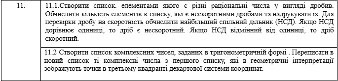
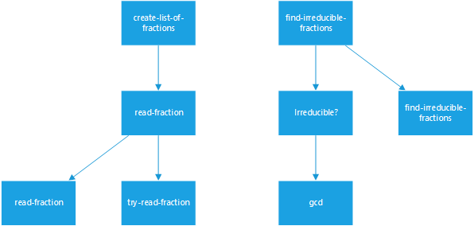
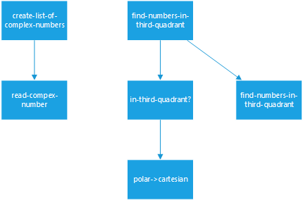
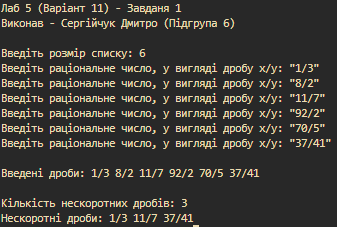
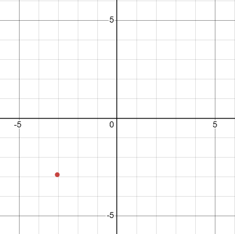
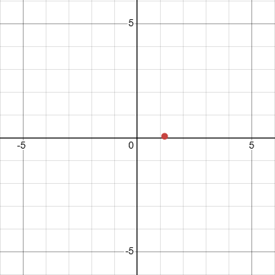
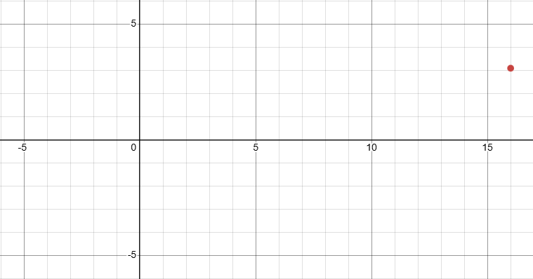
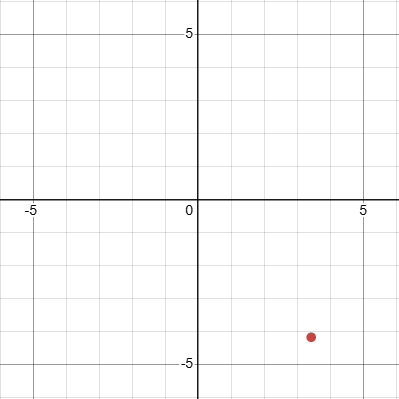
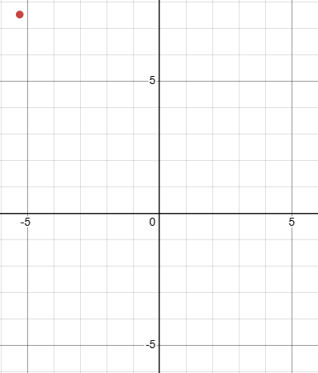

Мета
Опанувати технологію абстракції даних в мовах функціонального програмування. Реалізувати програму обробки раціональних та комплексних чисел мовами функціонального програмування, представивши ці числа конструкціями типу «пара»
Умова
Аналіз
Завдання 1
За умовою задачі потрібно перевірити, чи є дріб нескоротним. Це можна зробити за допомогою обчислення НСД чисельника та знаменника, якщо він дорівнює 1, то дріб нескоротний
Для реалізації пошуку НСД, можна використовувати такий алгоритм: ітеративна функція приймає два аргументи: a (більше число) та b (менше число), знаходиться остача від ділення a на b, якщо остача дорівнює 0, то число b - НСД, інакше виконується наступна ітерація, де до першого аргумента передається b, а до другого - остача від ділення
Приклад роботи для чисел 92 (a) та 54 (b):
- Остача від ділення 92 на 54 = 38 - не дорівнює 0, тому переходимо до наступної ітерації, де a = 54, b = 38
- Остача від ділення 54 на 38 = 16 - не дорівнює 0, тому переходимо до наступної ітерації, де a = 38, b = 16
- Остача від ділення 38 на 16 = 6 - не дорівнює 0, тому переходимо до наступної ітерації, де a = 16, b = 6
- Остача від ділення 16 на 6 = 4 - не дорівнює 0, тому переходимо до наступної ітерації, де a = 6, b = 4
- Остача від ділення 6 на 4 = 2 - не дорівнює 0, тому переходимо до наступної ітерації, де a = 4, b = 2
- Остача від ділення 4 на 2 = 0 - дорівнює 0, тому b = 2 - НСД
Завдання 2
Для перевірки, чи знаходиться комплексне число в 3 чверті, спочатку треба перевести його до геометричної інтерпретації. Це можна зробити за такою формулою: x = r * cos(ϕ); y = r * sin(ϕ). Далі можна просто перевірити, якщо x < 0 та y < 0, то точка знаходиться у 3 чверті
HIPO Діаграма
Завдання 1
Завдання 2
Код
Code: Task1
#lang racket
(displayln "Лаб 5 (Варіант 11) - Завданя 1")
(displayln "Виконав - Сергійчук Дмитро (Підгрупа 6)")
(newline)
; Читає дріб з консолі поки не буде введено коректне значення. Надає повідомлення для користувача
(define (read-fraction)
(printf "Введіть раціональне число, у вигляді дробу x/y: ")
(define fraction (try-read-fraction))
(cond
[(not fraction)
(printf "Некоректний ввід даних\n")
(read-fraction)]
[else fraction]))
; Читає дріб з консолі. Повертає пару (знаменник чисельник) або #f
(define (try-read-fraction)
(define input (string-split (read) "/"))
(cond
[(not (= (length input) 2)) #f]
[else
(define numerator (string->number (first input)))
(define denominator (string->number (second input)))
(if (and (number? numerator) (number? denominator) (not (zero? numerator)) (not (zero? denominator)))
(cons numerator denominator)
#f)]))
; Створює список дробів
(define (create-list-of-fractions)
(printf "Введіть розмір списку: ")
(define size (read))
; Рекурсивно записує, зчитані з консолі, дроби до спику, поки не буде досягнуто необхідний розмір
(define (read-numbers [numbers '()])
(if (= (length numbers) size)
numbers
(read-numbers (cons (read-fraction) numbers))))
(reverse (read-numbers)))
; Функція, яка виводить список дробів у консоль
; - numbers: список чисел
(define (print-fractions numbers)
(cond
[(null? numbers) (newline)]
[else (define current-number (car numbers))
(printf "~a/~a " (car current-number) (cdr current-number))
(print-fractions (cdr numbers))]))
; Функція, яка знаходить НСД двох чисел (a та b)
(define (gcd a b)
(define next-b (modulo a b))
(if (zero? next-b)
b
(gcd b next-b)))
; Функція, яка перевіряє, чи є дріб [fraction] нескоротним
(define (irreducible? fraction)
(define numerator (car fraction))
(define denominator (cdr fraction))
(define gcd-result (if (> numerator denominator) (gcd numerator denominator) (gcd denominator numerator)))
(= gcd-result 1))
; Повертає список з дробами, які не є скоротними
; - fractions: вхідний список дробів
; - irreducible: акумулятор-список нескоротних дробів
(define (find-irreducible-fractions fractions [irreducible '()])
(cond
[(null? fractions) (reverse irreducible)]
[else
(define current-fraction (car fractions))
(if (irreducible? current-fraction)
(find-irreducible-fractions (cdr fractions) (cons current-fraction irreducible))
(find-irreducible-fractions (cdr fractions) irreducible))]))
(define fractions (create-list-of-fractions))
(newline)
(printf "Введені дроби: ")
(print-fractions fractions)
(newline)
(define irreducible-fractions (find-irreducible-fractions fractions))
(printf "Кількість нескоротних дробів: ~a\n" (length irreducible-fractions))
(printf "Нескоротні дроби: ")
(print-fractions irreducible-fractions)
Code: Task 2
#lang racket
(displayln "Лаб 5 (Варіант 11) - Завданя 2")
(displayln "Виконав - Сергійчук Дмитро (Підгрупа 6)")
(newline)
; Читає комплексне число з консолі та надає перевірку
(define (read-complex-number)
(printf "Введіть модуль числа (m): ")
(define r (read))
(printf "Введіть кут (ϕ): ")
(define phi (read))
(cond
[(and (number? r) (number? phi)) (cons r phi)]
[else (printf "Некоректний ввід даних\n")
(read-complex-number)]))
; Створює список комплексних чисел, за вказаним розміром
(define (create-list-of-complex-numbers)
(printf "Введіть розмір списку: ")
(define size (read))
; Рекурсивно читає необхідну кількість чисел до списку [numbers]
(define (read-complex-numbers [numbers '()])
(if (= (length numbers) size)
numbers
(read-complex-numbers (cons (read-complex-number) numbers))))
(reverse (read-complex-numbers)))
; Виводить список комплексних чисел [numbers] у консоль
(define (print-complex-numbers numbers)
(cond
[(null? numbers) (newline)]
[else (define z (car numbers))
(printf "z = ~a(cos(~a) + i*sin(~a))\n" (car z) (cdr z) (cdr z))
(print-complex-numbers (cdr numbers))]))
; Конвертає комплексне число [z] з тригонометричної (полярної) до геометричної форми
(define (polar->cartesian z)
(let* ([r (car z)]
[phi (cdr z)]
[x (* r (cos phi))]
[y (* r (sin phi))])
(cons x y)))
; Перевіряє, чи число [z] знаходиться у 3 чверті
(define (in-third-quadrant? z)
(let* ([cart (polar->cartesian z)]
[x (car cart)]
[y (cdr cart)])
(and (< x 0) (< y 0))))
; Повертає список з числами, які знаходяться у 3 чверті
; - numbers вхідний список комплексних чисел
; - filtered акумулятор-список відфільтрованих чисел
(define (find-numbers-in-third-quadrant numbers [filtered '()])
(cond
[(null? numbers) (reverse filtered)]
[else
(define z (car numbers))
(if (in-third-quadrant? z)
(find-numbers-in-third-quadrant (cdr numbers) (cons z filtered))
(find-numbers-in-third-quadrant (cdr numbers) filtered))]))
(define complex-numbers (create-list-of-complex-numbers))
(newline)
(printf "Введені комплексні числа:\n")
(print-complex-numbers complex-numbers)
(printf "Комплексні числа, які в геометричній інтерпретації зображають точки у 3 чверті:\n")
(define filtered-numbers (find-numbers-in-third-quadrant complex-numbers))
(print-complex-numbers filtered-numbers)
Результати
Завдання 1
Завдання 2

Перевірка
Завдання 1
Були введені такі дроби: 1/3 8/2 11/7 92/2 70/5 37/41
Скоротними є такі дроби:
- 8/2 => 4
- 92/2 => 41
- 70/5 => 14
Отже нескоротними залишилися 1/3 11/7 та 37/41, що відповідає результатам програми
Завдання 2
Для перевірки було використано сайт Desmos
-
Число z=4.2(cos(3.9) + i*sin(3.9)) в геометричній формі:
 -
Число z=-4.21(cos(0.98) + i*sin(0.98)) в геометричній формі:

-
Число z=-1.2(cos(3.2) + i*sin(3.2)) в геометричній формі:
 -
Число z=16.3(cos(25.324) + i*sin(25.324)) в геометричній формі:
 -
Число z=5.4(cos(5.4) + i*sin(5.4)) в геометричній формі:
 -
Число z=9.2(cos(-4.1) + i*sin(-4.1)) в геометричній формі:

Отже результати виконання програми є правильни, оскільки лише перші 2 числа знаходяться у 3 чверті
Перевірка коду ШІ
Завдання 1
Введний запит: "чи відповідає даний код на мові програмування racket критеріям простоти та clean code? (код завдання №1)"
Відповідь Chat GPT
Загалом твій код на Racket добре структурований, читається логічно і функціонально коректний. Але якщо говорити з точки зору "clean code" і принципів простоти (simplicity), то є моменти, які можна покращити. Нижче я дам аналіз по критеріях, а потім — рекомендовану покращену версію з поясненнями.
🔍 Оцінка за критеріями чистого коду
✅ Позитивні сторони
- Коментарі якісні й зрозумілі — описують, що робить кожна функція
- Імена функцій говорять самі за себе (read-fraction, irreducible?, find-irreducible-fractions)
- Рекурсивна структура логічна й послідовна
- Використання cond замість вкладених if — це добре для читабельності
- Валідація введення реалізована правильно, користувачу зрозуміло, що пішло не так
⚠️ Недоліки з точки зору clean code
-
Функція try-read-fraction має занадто багато логіки:
- Перевірки кількості частин, перетворення в числа, додаткові умови (not (zero? numerator) тощо).
- Це можна спростити, розділивши перевірку та парсинг
-
Перевірка нескоротності (irreducible?) дублює логіку
- Виклик gcd з перевіркою if (> numerator denominator) непотрібний. Алгоритм gcd сам працює незалежно від порядку аргументів.
-
create-list-of-fractions можна зробити чистішою:
- Зараз використовує вкладену функцію, але можна просто згенерувати список через for/list
-
Вивід у консоль (print-fractions) рекурсивний, хоча зручніше було б зробити через for-each — це коротше й природніше для Racket.
-
Немає обробки неправильного розміру списку — якщо користувач введе нечисло, все впаде.
-
Валідація вводів і виводів частково дублюється між функціями (read-fraction, try-read-fraction).
💡 Покращена версія коду
Ось як можна зробити той самий функціонал простішим і чистішим, не змінюючи логіку:
Code
#lang racket
; Читає коректне раціональне число у вигляді x/y
(define (read-fraction)
(let loop ()
(printf "Введіть раціональне число (x/y): ")
(define input (read-line))
(match (string-split input "/")
[(list a b)
(define num (string->number a))
(define den (string->number b))
(if (and num den (not (zero? den)))
(cons num den)
(begin (printf "Некоректний ввід. Спробуйте ще раз.\n") (loop)))]
[else
(printf "Некоректний формат. Використовуйте x/y.\n")
(loop)])))
; Зчитує список дробів
(define (create-list-of-fractions)
(printf "Введіть кількість дробів: ")
(define n (string->number (read-line)))
(if (and n (> n 0))
(for/list ([i (in-range n)])
(read-fraction))
(begin (printf "Некоректне число. Спробуйте ще раз.\n")
(create-list-of-fractions))))
; Виводить список дробів
(define (print-fractions fractions)
(for-each (λ (f) (printf "~a/~a " (car f) (cdr f))) fractions)
(newline))
; НСД (алгоритм Евкліда)
(define (gcd a b)
(if (zero? b) a (gcd b (modulo a b))))
; Перевіряє, чи дріб нескоротний
(define (irreducible? f)
(= (gcd (abs (car f)) (abs (cdr f))) 1))
; Фільтрує нескоротні дроби
(define (find-irreducible-fractions fractions)
(filter irreducible? fractions))
; Основна логіка
(define fractions (create-list-of-fractions))
(printf "Введені дроби: ")
(print-fractions fractions)
(define irreducible-fractions (find-irreducible-fractions fractions))
(printf "Кількість нескоротних дробів: ~a\n" (length irreducible-fractions))
(printf "Нескоротні дроби: ")
(print-fractions irreducible-fractions)
Завдання 2
Введний запит: "чи відповідає даний код на мові програмування racket критеріям простоти та clean code? (код завдання №2)"
Відповідь Chat GPT
Дуже добре, що ти ставиш це питання — твій код насправді акуратний і зрозумілий, але якщо оцінювати його з позиції “clean code” та критеріїв простоти, він має як сильні сторони, так і кілька моментів, які можна вдосконалити.
Розберімо по пунктах 👇
✅ Що зроблено добре
-
Код логічно структурований
Кожна функція робить одну конкретну дію: зчитування, вивід, конвертація, фільтрація. Це відповідає принципу single responsibility.
-
Імена функцій зрозумілі
read-complex-number, polar->cartesian, in-third-quadrant? — назви інформативні, відповідають дії.
-
Код має коментарі
Коротко і зрозуміло описано, що робить кожна функція — це плюс
-
Рекурсія використана грамотно
Функції для читання списку та фільтрації реалізовані в чистому функціональному стилі (без змін стану).
-
Розділення задач
Перетворення координат (polar->cartesian) винесене в окрему функцію — це гарна практика
⚠️ Що можна покращити для чистоти та простоти
-
Перевірка введення через read
Використання (read) у Racket — небезпечне з точки зору надійності, бо:
- воно читає вираз у форматі Racket (наприклад, (3/2) буде інтерпретовано як дріб, а не як текст);
- грама може впасти при некоректному вводі.
💡 Краще:
читати через (read-line) → обробляти як текст → конвертувати у число через string->number. Це безпечніше і контрольованіше
-
Рекурсія там, де можна ітерацію
У функціях:
- print-complex-numbers
- find-numbers-in-third-quadrant
- read-complex-numbers
рекурсія читається трохи важче, ніж for-each або filter.
Racket має чудові вбудовані функції для цього — і вони роблять код коротшим і зрозумілішим.
-
Зайві перевірки або дублювання
У print-complex-numbers формула виводу:
Code(printf "z = ~a(cos(~a) + i*sin(~a))\n" (car z) (cdr z) (cdr z))дублює (cdr z) двічі. Це дрібниця, але краще зробити:
Code(let ([r (car z)] [phi (cdr z)]) (printf "z = ~a(cos(~a) + i*sin(~a))\n" r phi phi)) -
У create-list-of-complex-numbers:
- якщо користувач введе нечислове або від’ємне значення — програма не перевіряє це.
Краще зробити перевірку, аналогічно до того, як у тебе є у read-complex-number
-
Повторення логіки зворотного списку
Ти двічі використовуєш reverse після рекурсивного додавання елементів через cons
Це типово, але можна уникнути, якщо використовувати append або for/list
💡 Як це можна зробити “cleaner”
Ось спрощена, більш ідіоматична та чиста версія (з тим самим функціоналом):
Code
#lang racket
; Зчитує одне комплексне число в тригонометричній формі
(define (read-complex-number)
(printf "Введіть модуль (m): ")
(define r (string->number (read-line)))
(printf "Введіть кут (φ): ")
(define phi (string->number (read-line)))
(if (and r phi)
(cons r phi)
(begin
(printf "Некоректний ввід. Спробуйте ще раз.\n")
(read-complex-number))))
; Створює список комплексних чисел заданої довжини
(define (create-list-of-complex-numbers)
(printf "Введіть кількість чисел: ")
(define size (string->number (read-line)))
(if (and size (integer? size) (> size 0))
(for/list ([i (in-range size)]) (read-complex-number))
(begin
(printf "Некоректне число. Спробуйте ще раз.\n")
(create-list-of-complex-numbers))))
; Виводить список комплексних чисел
(define (print-complex-numbers numbers)
(for-each
(λ (z)
(define r (car z))
(define phi (cdr z))
(printf "z = ~a(cos(~a) + i*sin(~a))\n" r phi phi))
numbers))
; Перетворює з тригонометричної у декартову форму
(define (polar->cartesian z)
(define r (car z))
(define phi (cdr z))
(cons (* r (cos phi)) (* r (sin phi))))
; Перевіряє, чи знаходиться точка у 3 чверті
(define (in-third-quadrant? z)
(define cart (polar->cartesian z))
(and (< (car cart) 0) (< (cdr cart) 0)))
; Фільтрує числа, що лежать у 3 чверті
(define (find-numbers-in-third-quadrant numbers)
(filter in-third-quadrant? numbers))
; Основна програма
(define complex-numbers (create-list-of-complex-numbers))
(newline)
(printf "Введені комплексні числа:\n")
(print-complex-numbers complex-numbers)
(newline)
(define filtered (find-numbers-in-third-quadrant complex-numbers))
(printf "Комплексні числа у 3 чверті:\n")
(print-complex-numbers filtered)
Висновок
В даній роботі було продемонстровано роботу з парами в racket. Пари в мові racket - це тип даних, який дуже схожий за своєю суттю до списків. Він підтримує роботу з усіма функціями, які були використані для списків у попередніх лабораторних. Пари дозволяють зручно зберігати два списки в одному об'єкті